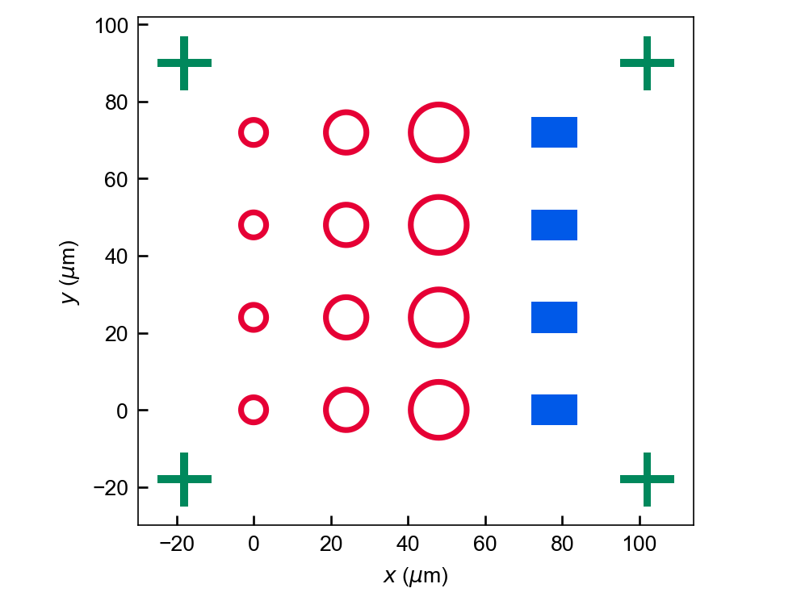
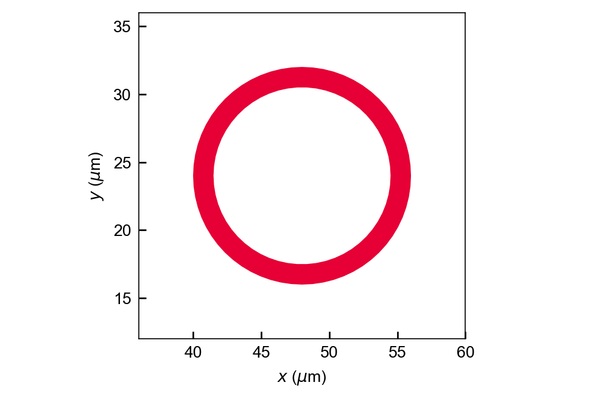
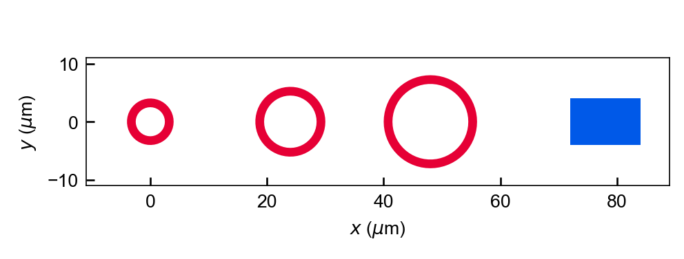

One parametric layout, one GDS file
A generic ring array, pads and alignment crosses, rendered after reading the exported GDSII file back into gdstk.
English README · 中文 README · Parameters & provenance manifest · Generator source
Symbols, units and evidence
Coordinates are in micrometres, with equal x/y aspect ratio. Geometry units: 10⁻⁶ m. GDS database precision: 10⁻¹¹ m; this is not fabrication accuracy.
Blue = layer/datatype 1/0 pads; red = 2/0 rings; green = 3/0 markers. Colors identify geometry layers, not a calculated physical field.
Outer ring radii 4, 6 and 8 µm; ring width 1.5 µm; row/column pitch 24 µm; pads 12 × 8 µm. Marker arm length 14 µm, width 2 µm.
All views use the same reloaded GDS polygons. The example checks polygon count, bounding box and area after export. This sample has no process-specific DRC or device-performance validation.

Whole-layout overview
Twelve rings, four pads and four crosses; 20 top-cell references and 24 flattened polygons.



Detail of the largest ring
A crop of the same GDS geometry, not a second design. Outer radius 8 µm, width 1.5 µm.



Read the radius parameter across one row
Three ring sizes and one pad at y = 0. Ring centers are x = 0, 24, 48 µm; the pad center is x = 78 µm.